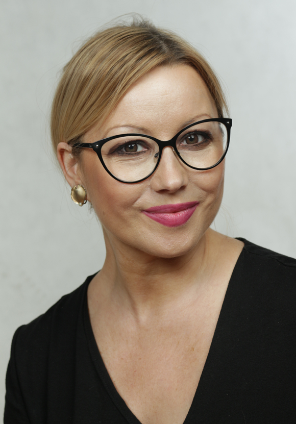
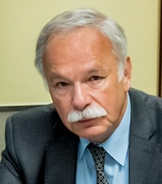

II Konferencja i Szkoła Pedeutologiczna
22-23 listopada 2024 r.

prof. dr hab. Agnieszka Cybal-Michalska
(Uniwersytet im. Adama Mickiewicza w Poznaniu)

prof. dr hab. Stefan M. Kwiatkowski
(Akademia Pedagogiki Specjalnej im. Marii Grzegorzewskiej)

prof. dr hab. Jerzy Nikitorowicz
(Uniwersytet w Białymstoku)

prof. dr hab. Mirosław J. Szymański
(Akademia Pedagogiki Specjalnej im. Marii Grzegorzewskiej)
prof. dr hab. Bogusław Śliwerski
(Uniwersytet Łódzki)

prof. dr hab. Marzenna Zaorska
(Uniwersytet Warmińsko-Mazurski w Olsztynie)